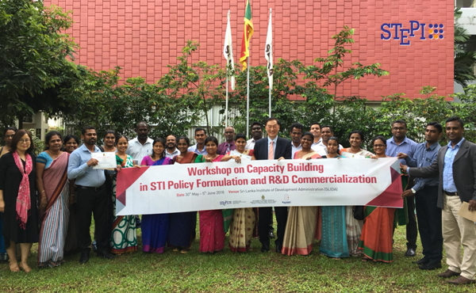

-

세상을 바꾸는 과학기술, 사람을 생각하는 정책
CORE STRATEGY
사람, 사회, 시대정신과 소통하는 과학기술정책
- 국가 경쟁력 강화
- 국제 사회 발전
- 국민 삶의 질 향상
NEWS
STEPI의 소식을 알려드립니다.
- STEPI-과학기술정보통신부 미래정책공동체 세미나 개최 2018.09.11
- 제421회 STEPI 과학기술정책포럼 – R&D 성과창출의 해법, 실증에 길을 묻다 2018.09.04
- STEPI-튀니지 고등교육과학연구부 간 MOU 체결(6.27-30) 2018.07.12
-  스리랑카 과학기술정책 역량 강화 워크숍 개최(18.5.30~6.5) 2018.06.11
- 2018 STEPI 국제심포지엄 개최(제420회 STEPI 과학기술정책포럼) 2018.05.24
- STEPI-과학기술정보통신부 미래정책공동체 세미나 개최 2018.09.11
- 제421회 STEPI 과학기술정책포럼 – R&D 성과창출의 해법, 실증에 길을 묻다 2018.09.04
- STEPI-튀니지 고등교육과학연구부 간 MOU 체결(6.27-30) 2018.07.12
- 스리랑카 과학기술정책 역량 강화 워크숍 개최(18.5.30~6.5) 2018.06.11
- 2018 STEPI 국제심포지엄 개최(제420회 STEPI 과학기술정책포럼) 2018.05.24
- 스리랑카 과학기술정책 역량 강화 워크숍 개최(18.5.30~6.5) 2018.06.11
- 2018 STEPI 국제심포지엄 개최(제420회 STEPI 과학기술정책포럼) 2018.05.24
CAREER
창의적 사고로 가능성에 대해 끊임없이 도전하는 인재